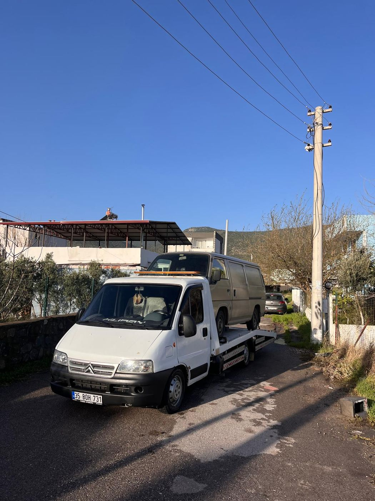
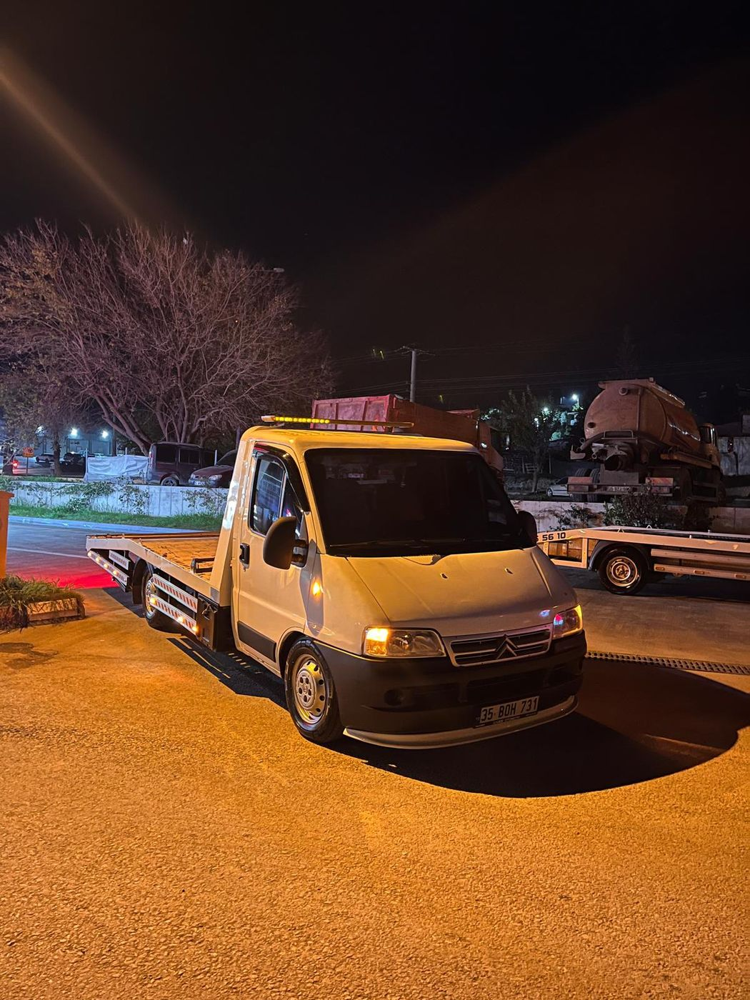
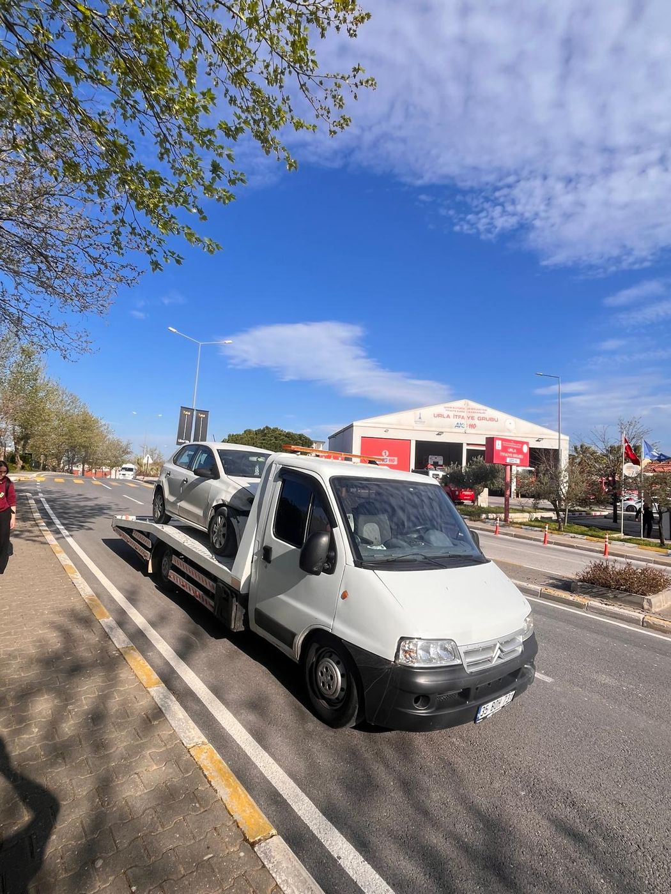
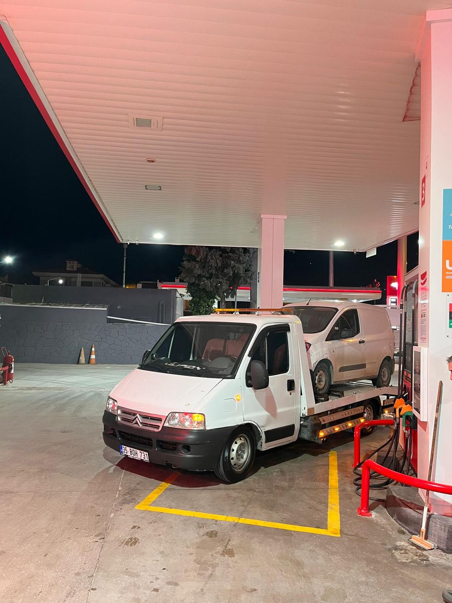
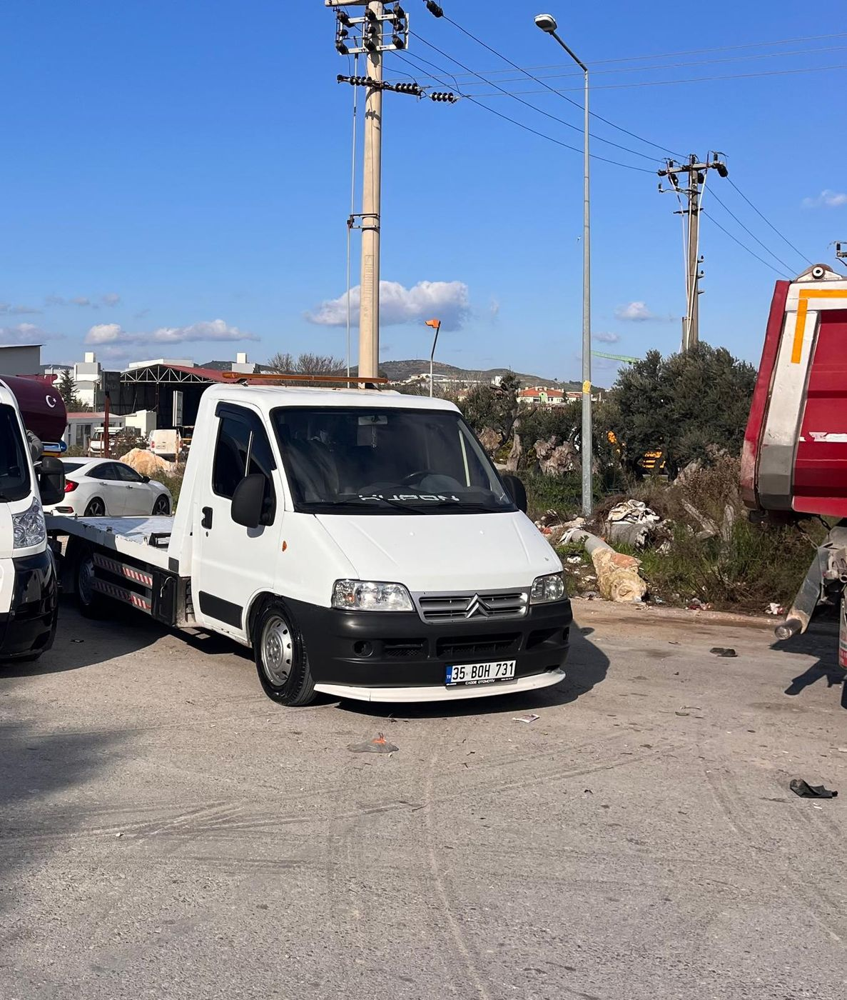

KOLEŞ Acil Çekici Oto Kurtarma
Şehir içi ve şehirler arası araçlarınız güvenli şekilde taşınır. Yol yardım ve akü takviye 7/24.
“Güvenilir ve profesyonel hizmetin en çekici hali”

Hizmetler
Araç Arızaları
Akü Arızası & Bitmesi
Lastik patladı
Kaza Sonucu Yardım
Yoldan Çıkan Araç Kurtarma
Şehirler arası taşıma




Hizmet bölgesi
Urla · Güzelbahçe · Narlıdere · Seferihisar · Çeşme · Alaçatı · Karaburun · Mordoğan · Menderes · Balçova
Sıkça sorulan sorular
Ne kadar sürede geliyorsunuz?
Konuma göre değişir; telefonda tahmini süre söylenir.
Gece de çekici bulunur mu?
Evet, 7/24. Gece de aynı numara.
Şehirler arası taşıma yapılıyor mu?
Evet. Şehir içi ve şehirler arası araçlarınız güvenli şekilde taşınır.